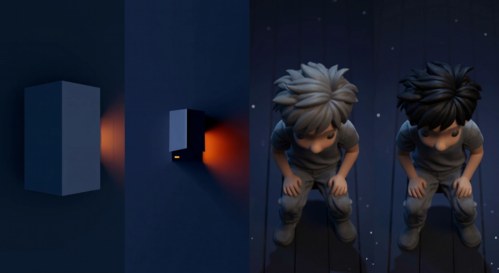

変更はイントロの6.6〜9.0秒だけ。それ以外（14秒以降の本編すべて）は現行v7と完全に同一です。 ・cut05（一軒の家 0.6秒）: 「壁に見える箱」→ 地面が四方に見える真俯瞰の一軒家＋窓の光 ・cut06（頭頂 1.8秒）: 銀髪 → ダークチャコール（構図・ポーズはそのまま）

「OK」で /v3/ をv8に差し替えます（追加費用$0・5分）。 気になる点があればスチルから再生成できます（各$1弱）。